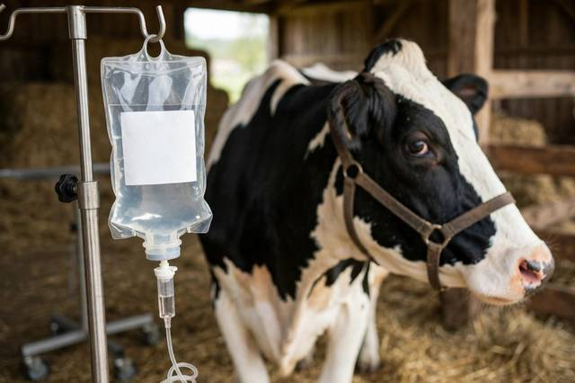

Bovine anaplasmosis is a tick-borne bacterial disease of cattle that damages red blood cells and may cause severe anaemia, jaundice and production loss.
This guide covers clinical signs, causes, diagnosis, treatment principles and prevention.
Clinical Signs
1
Fever(High body temperature)
2
Progressive Weakness(Gradual loss of strength)
3
Pale Mucous Membranes(Anaemia; pale gums and eyelids)
4
Yellow Mucous Membranes(Jaundice; yellowing of gums and eyes)
Anaplasma species spread through ticks and, in some settings, contaminated needles or instruments that transfer infected blood. Transmission routes vary by region and species.
Veterinary Diagnosis
Blood smear examination and laboratory testing such as PCR or serology can support diagnosis. Age, tick exposure and other causes of anaemia should be considered.
Treatment and Case Management
Treatment decisions depend on disease stage, animal status and local drug approvals. Veterinarians may use appropriate antimicrobials and supportive care. Severely anaemic animals may require intensive care. Avoid unsterile needle reuse and observe withdrawal periods.
When to seek urgent help: Marked weakness, severe pallor, jaundice or rapid deterioration requires prompt veterinary assessment.
Recommended Medicines
1
Antibiotic – Oxytetracycline(For the Anaplasma infection)10–20 mg/kg IM or SC daily
2
Antiprotozoal – Imidocarb dipropionate(For the blood parasite)2.4 mg/kg SC/IM
3
Supportive care – Multivitamins(To support recovery from anaemia)10 ml IM daily
⚠ Important Tips:
Use antibiotics only under veterinary advice.
Control ticks to prevent the spread of infection.
Do not reuse unsterile needles between animals.
Observe milk and meat withdrawal periods.
Oxytetracycline and imidocarb are alternative treatments — the veterinarian chooses ONE.
Injection — vet-administered onlyMedicines — only as prescribed by a veterinarian

IV fluid therapy — vet-administered
Prevention and Herd Management
Control ticks, use single-use or properly sterilised needles, disinfect instruments, monitor cattle after introduction and discuss vaccination or strategic prevention with local veterinary services.
Frequently Asked Questions
What are the symptoms of anaplasmosis in cattle?
Fever, progressive weakness, pale or yellow mucous membranes, reduced appetite, weight loss and reduced milk production. Some animals may abort. Red urine is less typical of anaplasmosis than of babesiosis.
What causes bovine anaplasmosis?
Anaplasmosis is caused by Anaplasma species, bacteria that damage red blood cells. They spread mainly through ticks and, in some settings, through contaminated needles or instruments that transfer infected blood.
How is anaplasmosis in cattle diagnosed?
Blood smear examination and laboratory tests such as PCR or serology can support the diagnosis. The veterinarian also considers the animal's age, tick exposure and other causes of anaemia.
How is anaplasmosis in cattle treated?
Treatment decisions depend on the disease stage, the animal's condition and local drug approvals. Veterinarians may use appropriate antimicrobials and supportive care, and severely anaemic animals may need intensive care. Always consult a veterinarian.
How can anaplasmosis in cattle be prevented?
Control ticks, use single-use or properly sterilised needles, and disinfect instruments. Monitor cattle after they are introduced to the herd, and discuss vaccination or strategic prevention with local veterinary services.
What is the treatment for anaplasmosis in cattle?
Treatment depends on the disease stage and the animal's condition. Veterinarians may use appropriate antimicrobials and supportive care, and severely anaemic animals may need intensive care, so always consult a veterinarian.
How to prevent anaplasmosis in cows?
Control ticks, use single-use or properly sterilised needles, and disinfect instruments. Monitor cattle after introduction to the herd and discuss prevention with local veterinary services.
گائے میں ایناپلاسموسس کا علاج کیا ہے؟
علاج بیماری کی شدت اور جانور کی حالت پر منحصر ہوتا ہے۔ ویٹرنری ڈاکٹر مناسب دوا اور دیکھ بھال تجویز کرتا ہے۔ شدید خون کی کمی والے جانور کو فوری دیکھ بھال کی ضرورت ہوتی ہے، اس لیے خود علاج نہ کریں۔
Key Takeaway
Early recognition, accurate diagnosis, responsible veterinary care and herd-level prevention are central to managing this condition. Follow current local veterinary authority guidance and medicine labels.